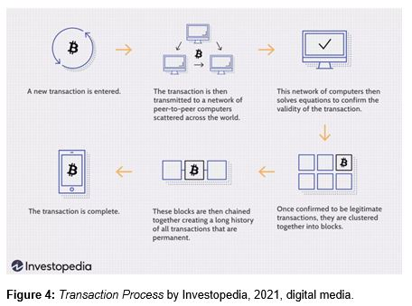

IT Technologies
Our group covered below 4 topics:
Cryptocurrencies and Blockchains
Currency, a history
To describe crypto currency, we must first understand the idea of currency itself. There are three types of value to rate any currency by, intrinsic value, extrinsic value, and the currencies’ store of wealth.
| One of the first types of currency was livestock and has been documented to be traded all the way back to 9000 B.C. Cows and sheep had an intrinsic value, meaning that the livestock it was inherently valuable or necessary to humankind, as they were eaten and used to produce milk.
|
|
Figure 2: Origins of Modern Cows Traced to single herd by Duncan Greene, 2012, digital media.
People could trade livestock for services, and someone who owned a substantial portion of livestock would be considered wealthy. Livestock as a currency is said to be a great ‘store of wealth’ as to this day it can fetch a large price and can still be traded for goods and services.
|
Figure 3: Evolution of Money by Sutori, (date unknown), digital media. |
The first example of an extrinsic currency was the cowrie shell as seen in Figure 3, which is one of the oldest and widely used currencies around the globe. With trade documented as early as 1200 B.C. the cowrie shell was found in the Pacific Ocean and was traded all over Asia and even Africa.
|
Afterwards, gold and silver coins were used as currency, and people ran into the first cases of inflation. Initially, gold and silver coins were valued upon their weight and content of each element. In Ancient Rome, after a rapid expansion of their territories, coins were used to pay workers for building their infrastructure. There was such a huge demand for coins that a substantial portion of tin was added to the silver denarius to the point that the coins were more metal content than silver. Between 200 and 300 A.D. inflation is said to have risen to an astronomic rate of 15,000%, and this is said to have an impact on the eventual collapse of Rome.
(Daily History 2018).
The ability of a single monarchy or government to apply their controls by choosing to devalue a currency for their own gain, regardless of the general publics’ opinion is referred to a ‘centralization’.

Examples of inflation in modern day currencies are many, with the US dollar inflating rapidly its conception and today. As shown in Figure 4, the rate of Inflation dropped between 1913 and 1940, but steeply over 2000% since. (Inflation Data 2020).
Cryptocurrencies
Bitcoin
Bitcoin was the first cryptocurrency, created in 2008 by an anonymous figure or figures under the pseudonym Satoshi Nakamoto. A white paper was published, which is a set of parameters which cannot be changed. This whitepaper can be seen here - bitcoin.pdf. There are two solutions to previous currency issues that are outlined in this white paper, which are inflation and centralization. Bitcoins’ maximum supply is 21 million, which is what will stop inflation of the currency, in other words, Bitcoin is ‘deflationary’. The other solution is that to change the parameters in the Bitcoin whitepaper, the community may enact changes only with a majority vote. Furthermore, no can Bitcoin be duplicated or recreated, as each creation and transaction of bitcoin is verified by the rest of the community. This is what makes Bitcoin decentralized.
Bitcoin was designed to be an electronic cash and is a peer-to-peer system meaning transactions do not need a third party, i.e., banks in between. This is one of the most appealing benefits of using cryptocurrencies, you are in full control of your wealth. While this benefits the user, it is a major point of contention with Governments across the world, notably the US and Chinese Governments.
The American Government is especially wary of bitcoin, as there is no intermediary it can circumvent capital controls, is unregulated and has history as payment for drugs and other illegal transactions on the silk road.
The Chinese government is also against Bitcoin and cryptocurrencies, recently banning the holding and selling of these currencies (For the 19th time). This was due to the discovery that Chinese citizens had transferred over 50 billion USD worth of Bitcoin from Chinese based wallets, to wallets in other countries, meaning citizens have transferred cash over to sidestep government regulation.
Other governments are not so wary of cryptocurrencies the primary example being El Salvador, which has recently adopted Bitcoin as legal tender. (Investopedia 2021).
Bitcoin Mining
As previously mentioned, Bitcoin has a finite supply of 21 million coins. Since Bitcoin was launched in 2009, 18 million of the Bitcoin have been added to circulation. The amount of bitcoin that is released in any given time can be altered due to supply and demand, which negates the possibility of inflation. When demand rises, supply can rise, and when demand lowers, supply can also lower. This rate of supply is decided by users on the bitcoin network. The point of this is to ensure there is never an over-supply, and once the last of the bitcoin are mined, the price will theoretically stay high. This differs from mining gold or diamond for example, as it is impossible to know how much will enter the market at any given time, and what this will do to the price.
Roughly 900 new Bitcoin enter the market every day, but every 4 years, the amount of bitcoin available for getting mined will half. This is called ‘bitcoin halfing’. This makes Bitcoin deflationary by design, which is what makes it so popular as a chosen currency.
The way bitcoins are created or mined is that all previous transactions are recorded in ‘blocks’ by groups of supercomputers, referred to as nodes. These nodes all form a community which record all bitcoin transactions in a block. Once the block is full, miners enter a ‘hash,’ which is a combination of numbers and letters and if the algorithm entered is correct, they receive a prize of an amount of bitcoin. Once this block and algorithm is verified by the rest of the mining community, it enters a chain, or ‘blockchain.’ Please refer to Figure 4 for a infographic on this process.
If a miner tries to add false transactions and cheat the system, they will be ostracised from the mining community, and all other miners will see the point of failure and go back to the last block. This is what makes it impossible to duplicate or fudge the mining process. All transactions are also publicly visible on the block chain explorer, https://www.blockchain.com/explorer. These factors are what makes Bitcoin decentralised.

Another great attraction to bitcoin is that since it’s conception in 2008, its price has risen from $0.08, to over $60,000AUD. While the markets are extremely volatile compared to gold, silver or traditional shares, it is clear to see that it has proven to be a great hedge against inflation and a store of wealth. It is likely that this price will continue to rise in the next 5 to 10 years. (Next advisor 2021)
It is important to note that while there are many arguments on why one should use Bitcoin as a store of wealth, there are also a few quite major problems. These include the huge amounts of energy spent in the mining process, as well as the centralizes tendencies it has in regard to the nodes or computers that are used in this process. Miners with the cheapest electricity, economies of scale and hardware optimization will get the biggest say, so it is possible for just one or two of these organizations to have a 51% majority vote. (Forbes, 2019)
Another issue is the amount of fluctuation in the price of Bitcoin. This makes in untenable as a substitute for cash, as it can double or half day to day and therefore must be compared against a stable currency like the US Dollar.

Several other cryptocurrencies have since been created to solve these problems, as well as other problems on the Bitcoin network. We can look to Figure 6 to see an in-depth comparison of a small handful of these cryptocurrencies to see that these newer cryptocurrencies also have a completely new set of use cases.
Charlie Lee, creator of Litecoin saw the fact that very specialized computers were needed for the Bitcoin mining process. With this issue in mind, he created the Algorithm for mining Litecoin in such a way that people with regular computers would be able to contribute to the mining process.
Litecoin and Dash have been created with the intention of speeding up transactions. Ripple was created to be used as a global settlement network, which is used to swap commodities between different currencies or frequent flyer miles. Users on the ripple network pay a small fee in XRP, which is the native token on the Ripple network. Ethereum is an open-source platform used for making Blockchain applications. Since its creation hundreds of different cryptocurrencies have been created on that network, with fees being charged in Ether, the native token. (Visual Capitalist 2017)
Cryptocurrencies are continuing to evolve and adapt to fix modern old and recent problems. We will also see innovative solutions being created to problems that may not exist in today’s world, in ways that we cannot yet comprehend. In the coming 3 years we will continue to see this progression and may see Bitcoin, or another token being used as legal tender in many countries around the world, and eventually take the place of fiat currency altogether.
Blockchains

As previously mentioned, blockchain was originally created as a database to store bitcoin transactions. Nodes on the bitcoin network record every transaction and each time a block is created and verified by the rest of the community, bitcoin are created. This decentralization is the main benefit of blockchain technologies, and its inception many other use cases have been realized.
To put it simply, Blockchains can be used as an intermediary between any 2 users, for verification and proof of the fact that a task has been completed. The added benefit being that once this task has been completed, it is recorded and both parties can see this. This means that neither party can forge the document or agreement, giving users peace of mind. This also removes the need for a third party to fact check any transactions.
Blockchains are already being used by several major companies including Walmart, Pfizer, AIG and Siemens. A good example of blockchain technology is with IBMs food trust blockchain. This can be used to trace the journey of food products to get to their end location. You will be able to see where the food was harvested/ the animal it came from, which stops it has made and when it got to the place you are buying it from.
Another example of how blockchain can be used is a digital certificate. Once one user applies their signature to the original copy, all records are then updated across the network. This means that a persons’ signature cannot be forged, and the original copy cannot be altered. If it is altered, the opposite party can see that the blocks on the chain have been modified.
One of the industries that may stand to gain the most from Blockchain technology is the Finance sector. I will discuss where Blockchain may change this industry and why. These following areas are noteworthy: lower transaction fees and speed, ease of transfers, privacy, security, and quicker transaction approvals.
While transaction fees on the Bitcoin network can be as much as $50, users can set their maximum limit of how much they are willing to pay per fee. Transactions on such networks usually take between 15 minutes and 1 hour, as opposed to up to 48 hours (or more over weekends.) The only thing needed to transfer money on a cryptocurrency network is a mobile phone and an internet connection. This is much simpler than having to provide full identification to a bank, open accounts and then complete the transfers. Blockchain networks can offer more privacy than bank accounts, as only the transactions are publicly recorded, not who they come from or who they are going to.
Blockchain storage can also be much more secure than an online bank, which can be targeted and hacked. If cryptocurrency is stored on a ‘cold wallet’ meaning that there is no internet connection to this wallet, then it can be considered a lot safer. Lastly, the staff at your bank reserve the right to block transactions or freeze your account if they decide to. There are no such pressures or controls pressures on the Blockchain network.
While this makes the banking process more streamline for the end user, we believe it may make some roles in the industry redundant.
Blockchain is also used in the Healthcare field, when it is used to store medical records, signatures of prescriptions and more. Once these health records are updated and encoded, they can be accessed by the user and the user will have peace of mind knowing that these records cannot be altered.
(Investopedia 2021).
We believe that in the next 10 years blockchain will continue to revolutionize many aspects of society and continue to resolve many issues in our digital world. This may affect some jobs and roles in todays’ society, roles that involve verifying transactions, signatures, or to put it more simply, any contract that involves two people that may not trust each other. I believe it will be completely embedded in the digital world, and hopefully help regulate the online world against fraud and scams.
We will see such technology everywhere we go to the point where it becomes the new norm.